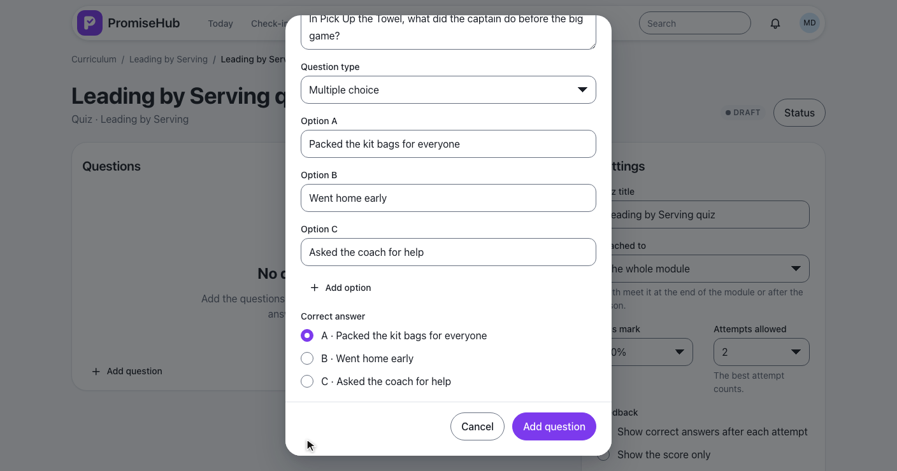
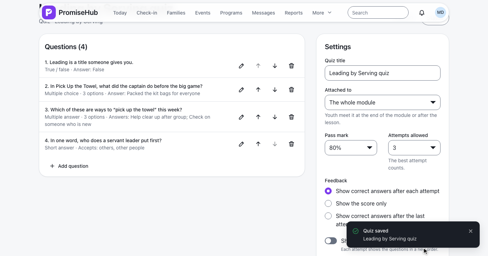
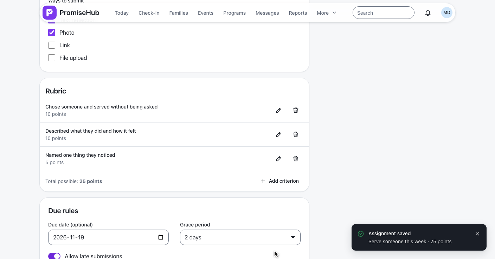
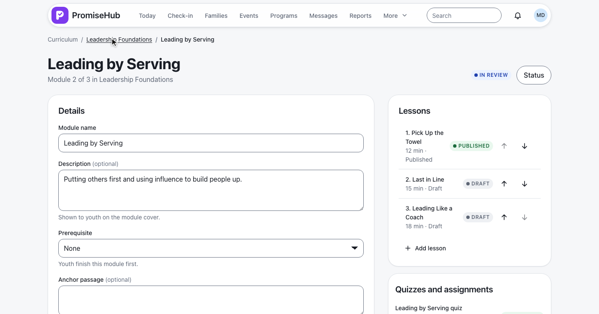
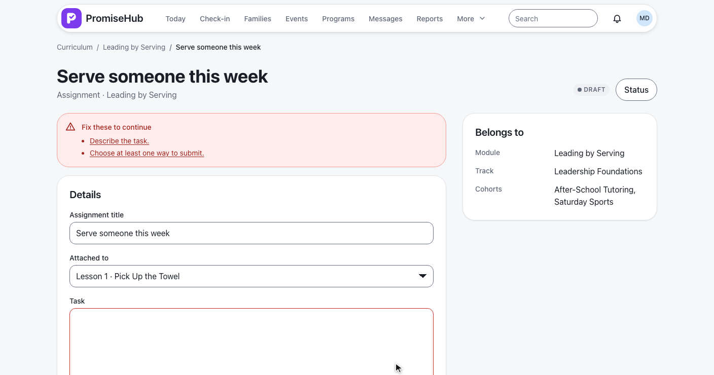

PromiseHub · Video 60
Author quizzes and assignments
Questions of four types, the rules a quiz is taken under, a rubric with its total, and publishing
Questions of four types, the rules a quiz is taken under, a rubric with its total, and publishing
New quiz, four questions, the rules saved and published.
| Type | Options | Correct |
|---|---|---|
| Multiple choice | 2 to 6 | Exactly one |
| True / false | True and False | One |
| Multiple answer | 2 to 6 | At least one |
| Short answer | — | 1 to 10 accepted answers |
QuestionRules · up to 50 questions · audited on QuizQuestion


| Rule | Range |
|---|---|
| Pass mark | 1 to 100%, default 70% |
| Attempts | 1 to 10 or unlimited, default 2 |
| Feedback | After each attempt, score only, after the last |
| Shuffle, required | On or off |

The task, ways to submit, a rubric of three criteria and due rules.


Questions, then settings; the dialog scrolls on its own.
No questions, no task, not found, Try again, forbidden, Learning off.
| Caller | Answer |
|---|---|
| Admin, program director | Their organization's quizzes and assignments |
| Site lead, youth worker, youth, mentor | 403 |
| Another organization's id | 404 |
| Learning off | 404, routes go to Today |

CurriculumQuizzesTests: types, refusals, edit, delete, order, rules, status, roles, tenancy, Learning offCurriculumAssignmentsTests: fields, rubric and total, publishing, the lesson fallback, roles, tenancycurriculum-quizzes.spec.ts and curriculum-assignments.spec.ts on phone and laptop, with axe
Next: youth take quizzes